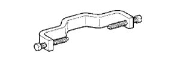

БЛОК МЕХАНИЧЕСКОЙ ТРАНСМИССИИ > РАЗБОРКА > Подготовка

 | 09308-00010 | Съемник сальников |
| 09817-16011 | Ключ для снятия датчика заднего хода на трансмиссии | |
 | 09950-40011 | Набор универсальных съемников В |
 | (09951-04010) | Траверса 150 |
 | (09952-04010) | Подвижный блок |
 | (09953-04020) | Центровочный болт 150 |
 | (09954-04010) | Рычаг 25 |
 | (09955-04011) | Захват № 1 |
 | (09955-04051) | Захват № 5 |
 | (09957-04010) | Переходник |
|  | (09958-04011) | Держатель |
 | 09950-50013 | Набор универсальных съемников С |
 | (09951-05010) | Траверса 150 |
 | (09952-05010) | Подвижный блок |
 | (09953-05020) | Центровочный болт 150 |
 | (09954-05021) | Захват № 2 |
| (09957-04010) | Переходник |
| Фирменный герметик Toyota 1281, Three Bond 1281 или аналогичный | |
| Фирменный герметик 1344 от компании Тойота, Three Bond 1344 или аналогичный |
| Нутромер | - |
| Индикатор часового типа | - |
| Комплект плоских щупов | - |
| Микрометр | - |
| Универсальная консистентная смазка | - |
| Пластмассовый молоток | - |
| Пресс | - |
| Динамометрический ключ | - |
| V-образные призмы | - |
| Штангенциркуль | - |
 | 09010-3C120 | Набор торцевых головок "TORX" | - |
 | (09013-1C130) | Торцевой ключ с головкой "TORX" T40 T-типа | - |
 | 09051-1C410 | Бородок с тонким цилиндрическим концом 5 | - |
 | 09905-00012 | Съемник пружинных стопорных колец № 1 | - |
| Параметр / Устройство | Объем | Классификация |
| Масло для механической трансмиссии | 2,2 литра (2,3 кварты США, 1,9 английской кварты) | API GL-4 или GL-5 SAE 75W-90 |